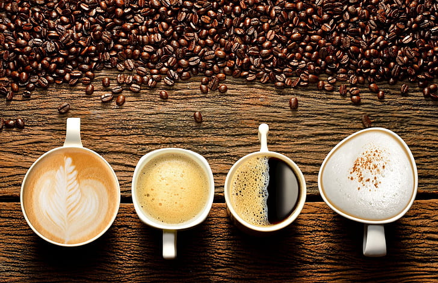

¿Quienes somos?
Somos una empresa de exportacion de cafe, utilizamos varias empresas colaboradoras para vender cafe a cualquier persona, nos especializamos en 4 tipos de semillas de cafe: Arabica, Robusta, Excelsa y Liberica.
Nosotros te enviamos tu cafe preferido para que puedas tomarlo como tu prefieras.
Te explicamos un poco el ciclo de recolección del cafe.
El café, en sus distintas etapas desde la recolección hasta el café verde, soporta sin perder calidad el paso de unas semanas, sin más cuidados que evitar una excesiva humedad o un recalentamiento fuerte. El grano de café verde conserva casi intactos todos sus aromas potenciales durante un largo periodo de tiempo (hasta 2 años). Pero una vez tostado comienzan a producirse procesos de degradación en un breve período de tiempo (en 35 días después del día de tueste los aceites que se encuentran alrededor del grano se han oxidado con el consiguiente enranciamiento del café).
Tambien intentamos aportar vuestro granito de cafe que nos dais con vuestra participacion en las redes sociales con el hastag #CoffeeNation.
